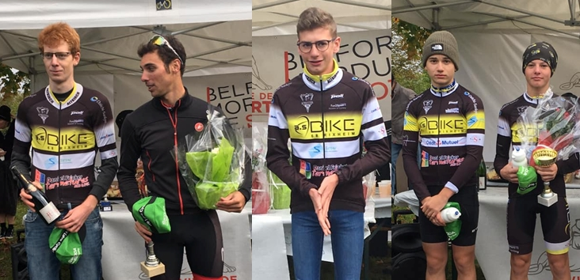

Dernières nouvelles
Mis à jour le 24 février 2020
Suivez les aventures du VCS Altkirch en stage en Toscane ci-dessous, jour après jour ! Une semaine organisée de main de maitre par Alain Lamy - Fun2Sport.
► Jour 1 : Lire le résumé
Certains avaient presque cru que cela n'arriverait pas : ce dimanche matin, tous les altkirchois participant au stage se sont bien réveillés en Toscane, et avec leurs vélos ! Quelques mésaventures d'ordre mécanique ont bien compliqué le voyage hier, mais certains n'ayant pas hésité à mettre les mains dans le cambouis, le véhicule transportant les vélos a finalement bien rejoint l'Italie. C'est donc depuis l'hôtel Fattoria Belvedere de Casino di Terra - lieu de résidence cette année, bien connu de ceux qui étaient en stage il y a 3 ans et plus, que les cyclistes ont pu aller faire ce matin leurs premiers kilomètres de l'année sur les routes toscanes. Entre 65 et 90km selon les niveaux, avec un passage à Castagnetto Carducci devant l'hôtel qui avait accueilli le VCSA en 2019 !
Des températures agréables et des paysages sympathiques ont permis à chacun d'apprécier la sortie, malgré pas moins de quatre crevaisons pour le groupe (nous ne mettrons ici pas en cause la qualité de certaines petites routes italiennes ;-)).
L'après-midi, une courte virée à Cecina, en vélo pour certains et en voiture pour d'autres, était au programme. Avec pour chacun la première glace artisanale italienne de l'année... unanimement appréciée !
► Jour 2 : Lire le résumé
Deuxième journée de vélo, toujours sous le soleil (encore plus brillant que la veille!). Après le petit-déjeuner, tous les cyclistes prennent la direction de Volterra, incontournable ville de la région, avec son grand centre-ville de ruelles étroites et pavées, dominant les collines. Les accompagnateurs non-cyclistes prennent autant de plaisir à rejoinre Volterra que les cyclistes doivent appuyer sur les pédales pour l'atteindre. Une fois au sommet, tout le monde peut profiter, et les plus expérimentés entament une boucle au nord-est de Volterra tandis que les autres reviennent à Casino di Terra... par Montecatini Val di Cecina, ajoutant une belle difficulté supplémentaire au trajet.
Une fois rentrés, nourris, et après la petite pause digestive régénératrice sur la terrasse pour profiter du grand soleil du jour, c'est en diretion de Marina di Cecina, la partie côtière de Cecina, que les coureurs sont allés. La glace artisanale quotidienne s'y est imposée, mais également une baignade pour les plus courageux (fous?) du groupe !
► Jour 3 : Lire le résumé
Les jours se suivent et se ressemblent, avec une journée supplémentaire sous un grand soleil et avec d'agréables températures printanières. Et comme les jours précédents, une belle sortie groupée a été organisée ce matin, avec 75km au nord-ouest (Riparbella) et une pause café à Cecina en présence de Silvia Parietti (comme en 2019!).
L'après-midi, deuxième sortie vélo pour profiter notamment du super point de vue depuis La Sassa (photo ci-dessous), puis pour effectuer quelques sprints, les premières courses arrivant à grand pas...
NB : Aucun cas de coronavirus détecté à ce jour !
► Jour 4 : Lire le résumé
Le vent souffle sur les vallons de Toscane, et après trois belles journées de vélo, voir les cyprès pencher de droite à gauche a rapidement suffi à convaincre les sundgauviens présents ici de faire de ce mercredi une journée de repos. Repos pour les jambes, mais pas pour le cerveau ! Visite de Sienne pour certains, sortie à vélo malgré tout pour d'autres, et visite du musée de la géothermie de Larderello pour quinze personnes. Une découverte enrichissante de l'histoire et du fonctionnement de la principale centrale géothermique de la région et de l'Italie.
Au programme de l'après-midi, une activité (incontournable des séjours en Toscane) on ne peut plus appropriée pour une journée de repos : aller aux thermes de Sassetta !
Photo de famille
Rédigé le 16 février
La samedi 8 février, à deux semaines du stage en Toscane et à un mois du Grand Prix de Wittenheim - ouverture de la saison route -, les altkirchois se sont vêtus de leur plus beau maillot, et se sont donnés rendez-vous à Altkirch pour la photo de famille de l'année, avant de partager un petit apéritif puis d'aller profiter du climat pour le moins favorable de cet hiver pour rouler ensemble ! La photo, signée Marie Nussbaumer :
L'occasion de remercier tous les partenaires du Vélo Club pour leur soutien ; rien ne serait possible sans eux !
Décor allemand pour inaugurer les nouveaux maillots !
Rédigé le 15 janvier
2020 pouvait-elle commencer de meilleure manière qu'avec une livraison des nouvelles tenues ? Probablement pas... alors pour inaugurer celles-ci dans le plus beau des décors, une dizaine de coureurs altkirchois, dont Hugo, de passage entre sa préparation en Espagne et sa première course en Argentine, ainsi que Marie, pour l'accompagner (ainsi que Petrus), ont passé le week-end sur les routes allemandes de la Forêt Noire et du Kaiserstuhl entourant leur hébergement à Herbolzheim.
Au programme, pas encore de grosses séances d'intensités (sauf pour Hugo), mais des heures de selle entre amis et équipiers sur de nouvelles routes, et une soirée conviviale tous ensemble (avec en bonus les directeurs sportifs, venus déguster eux aussi une pizza), à deux mois des premières courses pour les amateurs.
Le dimanche, les coureurs ont eu le privilège d'être accompagnés par Marie Nussbaumer, photographe professionnelle qui a pu immortalier certains instants et mettre en valeur les nouveaux maillots... (photo ci-dessus) !
Championnats de cyclo-cross FFC & Stage en Toscane
Rédigé le 12 décembre
Le championnat Grand Est de cyclo-cross FFC se déroulait ce dimanche à Lutterbach-Pfastatt, avec les vétérans altkirchois bien évidemment au rendez-vous. Dans cette épreuve, c'est sans surprise que Jérémy Bolli, ultra-favori, s'est imposé. Derrière, Alexis a été a la lutte pour monter sur le podium. Mais le final de la course ne lui a que permis de terminer "que" à la 4ème place, à quelques secondes de Petitdemange, dauphin de Bolli. Derrière, Eric termine 11ème et Grégory 12ème. L'après-midi, dans la course élites, Damien Mougel a conservé son titre malgré la concurrence et les tentatives des coureurs d'AS Bike Cross Team notamment.
Le championnat Grand Est ne marque pas la fin de la saison de cyclo-cross régionale, puisqu'il reste encore quelques cyclo-cross, FSGT comme FFC, dans le Bas-Rhin fin décembre, ainsi que les championnats nationaux FSGT fin janvier dans l'Aube. Mais il marque toutefois l'arrivée des fêtes de Noël et de 2020. Pour les routiers, la préparation commence déjà et, en plus de la PPG le vendredi soir à Altkirch qui réunit jusqu'à 25 membres (!), Alain Lamy a préparé l'édition 2020 de l'annuel stage en Toscane !
Après Castagnetto Carducci cette année (lire le résumé ici, le VCS Altkirch retournera cette année dans un hôtel où il a déjà séjourné il y a plusieurs années, à Casino di Terra !
Les cyclo-crossmen altkirchois réguliers
Rédigé le 1er décembre
Une semaine avant le championnat Grand Est FFC de Cyclo-cross à Lutterbach-Pfastatt se déroulait ce dimanche le championnt d'Alsace FSGT à Niffer. Et dans cette discipline, outre Jérôme Heinis, régulièrement placé parmi les seniors, on retrouve presque tous les dimanches un inébranlable trio de jeunes vétérans altkirchois : Alexis Ballester, Grégory Weber et Eric Heitz. Le trio cumule déjà une quinzaine de top10 dont plusieurs podiums ! Quatre fois 3ème (Wittenheim - Saint-Bernard - Soultz) et une fois 2ème (Kappelen, photo ci-dessous), Alexis est monté sur la boîte à chaque cyclo-cross FFC effectué, en masters + 40 ans. Du côté de la FSGT, où les vétérans sont mélangés aux seniors, son palmarès donne 5ème, 8ème, 8ème, 7ème, et encore 7ème. Grégory et Eric se sont également régulièrement insérés dans les top 10, d'une catégorie dominée tous les dimanches par le thannois Jérémy Bolli.

Ce dimanche a confirmé la tendance. Autour de l'écluse de Kembs-Niffer, Alexis est devenu vice-champion d'Alsace Vétéran de cyclo-cross FSGT derrière Bolli. Eric et Grégory le suivent au classement des vétérans alsaciens, les trois coureurs étant respectivement 9ème, 16ème et 19ème de l'épreuve remportée au scratch par Antoine Burger. Les classements sont ici.
Assemblée Générale
Rédigé le 1er décembre
Le 23 novembre s'est déroulée l'Assemblée Générale du VCS Altkirch à Hagenbach. Près d'une centaine de membres étaient présents à Hagenbach pour cette soirée, assistant à l'AG puis profitant d'un repas convivial et festif, se préparant ainsi à tourner la page de 2019 (et des 125 ans du club !) pour ouvrir celle de 2020..
Cyclo-cross de Saint-Bernard
Rédigé le 20 octobre
Pour les nombreux spectateurs venus assister au cyclo-cross de Saint-Bernard ce dimanche, il aura fallu attendre les derniers hectomètres pour savoir qui allait remporter l'épreuve reine. Au bout du suspense, c'est finalement le spécialiste du VTT allemand Tim Meier qui a déboulé en premier sur la ligne d'arrivée ! Longtemps à la lutte pour l'emporter, Arnaud Schlienger prenait, cinq secondes plus tard, la 2ème place devant Loïc Sémon.
C'est pourtant un scénario bien différent qui s'était dessiné dans les premiers tours. Auteur d'un départ tonitruant, Hugo Hofstetter s'était isolé en tête de course très rapidement. Accumulant au fil des premiers tours jusqu'à une minute d'avance, la victoire semblait promise au coureur professionnel licencié au VCS Altkirch qui montrait toute sa puissance sur le parcours, lui qui a encore enfilé un dossard sur route dimanche dernier, avec une 25ème place au Memorial Rik Van Steenbergen (Belgique). Mais Hugo déjantait alors. Avec un seul vélo, le vainqueur de l'édition 2017 de ce cyclo-cross était donc contraint à l'abandon.

Changement total de physionomie de course donc. La victoire allait alors se jouer entre ses poursuivants (sans Jérôme Heinis, lui aussi victime d'une crevaison fatale), à savoir Arnaud Schlienger, Tim Meier, Sébastien Kern et, 50m plus loin, Loïc Sémon. La situation ne se décantait pas et le suspense restait total à l'entame du dernier tour. Kern partait à la faute en premier et perdait ses chances de podium. Puis Tim Meier, le plus frais, plaçait dans la dernière ascension une accélération fatale à ses adversaires, qui ne purent plus l'empêcher de lever les bras sur la ligne. Juste derrière, Arnaud, porté par les supporters altkirchois, prenait l'ascendant sur Loïc Sémon dans le dernier virage et s'adjugeait donc la deuxième place !
Plus tôt dans l'après-midi, la course des masters a été dominée par Olivier Schnell (AC Erstein). Le coureur bas-rhinois s'est isolé en tête dès le départ et laissé aucune chance à ses poursuivants, Eric et Alexis, les deux altkirchois qui terminaient finalement 2ème et 3ème tandis que Grégory complétait la belle performance collective du VCSA en terminant 5ème.
La journée, qui avait débuté avec les courses des écoles de cyclisme en fin de matinée,s'est terminée sur deux remises des prix : d'abord celle de la tombola, pour laquelle Hugo avait fourni différents lots (tenues du Team Cofidis), puis celle des différentes courses de l'après-midi, organisée dans les locaux de la menuiserie Enderlin.
Les vainqueurs du jour :
- Poussins : Liam Bessal (SSOL Habsheim)
- Pupilles : Louison Ohl (VC Eckwersheim)
- Benjamins : Jules Ohl (VC Eckwersheim)
- Minimes : Donovan Specht (VCS Altkirch)
- Cadets : Julien Grass (PE Haguenau)
- Juniors : Guillaume Schlewitz (EC Colmar)
- Masters : Olivier Schnell (AC Erstein)
- Féminines : Maurane Garbellotto (AC Thann)
- Elites : Tim Meier (RSV Rheinfelden)
Les classements complets => ici.
Le Diaporama de l'Alsace => ici pour les écoles de cyclisme.
Photos Coralie R., dont vous pouvez retrouver l'album entier sur Facebook ici.
Octobre de boue et de chronos
Rédigé le 16 octobre
Les adeptes du vélo sur goudron ont eu deux ultimes occasions de mettre un dossard en octobre : deux épreuves chronométrées, l'une en côte, la grimpée FSGT du Salbert le samedi 5, et l'autre à peine vallonnée, au gentleman de Nommay le lendemain. Sur les pentes du Salbert, les altkirchois étaient bien présents puisqu'au classement scratch, Florian signait le 2ème temps en 9'13". Chez les cadets, Mathias ne laissait quant à lui la victoire à personne d'autre et l'emportait, accompagné sur le podium par Antoine (3ème). Matthieu terminait également 2ème en minimes.
Au gentleman de Nommay, où la pluie engendrait une faible participation, Valentin et Florian n'ont quant à eux pas hésité à prendre le départ, en duo. Motivation récompensée puisqu'ils signent le meilleur temps de la journée à l'issue des 27kms chronométrés et concluent ainsi leurs saisons par une victoire!
L'article du journal l'Alsace sur la grimpée du Salbert est ici et celui sur le gentleman de Nommay est là.

Côté cyclo-cross, on prend les mêmes passionnés de la discipline, et on voit qu'ils continuent sur leur lancée : Jérôme Heinis s'est montré à son aise sur les cyclo-cross FFC du Bas-Rhin puisqu'il termine 6ème à Dosenheim sur Zinsel puis 7ème à Bischwiller. Alexis confirme sa bonne forme en terminant 5ème scratch et 2ème vétéran en FSGT à Morschwiller-le-Bas, tandis qu'Eric y termine 8ème et 4ème vétéran.
Contre-la-montre et Jolidon Classique
Rédigé le 20 septembre
Avec l'approche de la fin de la saison sur route, viennent les épreuve de contre-la-montre. Une discipline que maîtrise notre féminine Gisèle Wurtz, puisqu'elle y a dominé les classements pour féminines deux jours consécutifs : Victorieuse samedi à la grimpée du col Amic, elle a réédité sa performance le lendemain à Frotey-les-Lure où elle a ainsi décroché le titre de championne Alsace Franche-Comté FSGT de CLM. De la même façon, chez les cadets, Antoine Caoduro a réussi le meilleur temps et s'est donc adjugé la tunique de champion!

Les coureurs qui n'ont pas opté pour le contre-la-montre de Frotey-les-Lure le dimanche se sont quant à eux confronté aux bosses du Jura suisse en prenant part à la cyclosportive La Jolidon Classique. Pas moins de 13 coureurs altkirchois étaient au départ, la plupart ont été très actifs pendant la course, et nombreux étaient placés encore à l'arrivée : 7 coureurs finissent dans le top 25 avec un superbe podium pour Julien B. (3ème), suivi par Thibaud (5ème), Arnaud (7ème), Daniel (12ème et 1er de sa catégorie) puis Valentin, Florian et Antoine (20-21-25èmes).
Photos Georges Henz / RJB.ch (l'article ici)
Boron-zés !
Rédigé le 13 septembre
Pour la dernière course sur route en ligne FSGT de la saison, plusieurs altkirchois ont pris le départ du Prix de Boron ce dimanche. Malgré des conditions météo délicates, entre averses régulières et fraîcheur septembrale, les altkirchois étaient représentés aux départs de chacune des 5 épreuves. En cadets, Mathias était le premier de la journée à se hisser sur le podium, puisqu'il terminait 3ème en réglant le sprint du peloton, dans lequel figurait aussi Antoine (9ème). En V4, 11ème place pour René, tandis que Matthieu terminait 5ème en minimes.
Concernant les deux courses suivantes, celles des S4/J4 , deux belles médailles de bronze ont encore été ramenées. En S4, après l'abandon de Valentin sur bris de rayon, notre coureur allemand Fabian tirait bien son épingle du jeu lors du sprint massif, prenant la 3ème place et réalisant ainsi sa meilleure place de sa saison FSGT. En 2/3, Antoine était longuement échappé en binôme avec Johan Seddiki (ACT Belfort), mais cédait à 3 tours de la fin face au rythme trop soutenu du junior qui allait s'imposer seul. En contre-attaque, Julien B. butait à 8" du vainqueur et s'adjugeait alors la troisième troisième place de la journée, accompagné dans le top10 par Daniel (6ème).
Du Sundgau au Tour Loire Pilat Forez !
Rédigé le 6 septembre
Après avoir profité des conditions et vacances estivales pour faire le plein d'énergie, le VCS Altkirch a participé pour la première fois au Tour Loire Pilat Forez, organisé dans les alentours vallonnés de Saint-Étienne les 24 et 25 août, avec 2 étapes en ligne et un contre-la-montre individuel.
Course lointaine oblige, l'équipe constituée de Valentin, Julien B., Florian, Thibaud et Arnaud (de gauche à droite ci-dessous), accompagnée de René, Denis et Chloé, prenait la route dès le vendredi, et entamait ce week-end estival (100% chaud et ensoleillé) avec un déblocage touristique et une nuit de sommeil dans les charmants Monts d'Or, au nord de Lyon.
Les choses sérieuses commençaient le lendemain avec une première étape d'environ 80km, cumulant tout au plus une quinzaine de kilomètres de plat. Pour le reste, un enchaînement incessant d'ascensions de quelques kilomètres aux pourcentages variables, rendant la course particulièrement usante. Les premières ascensions mettaient déjà en difficulté Valentin et Florian, tandis qu'Arnaud, Thibaud et Julien restaient au contact des meilleurs. Le premier des trois a profité de sa très bonne forme pour se glisser dans la bonne échappée du jour, derrière le vainqueur en solitaire péruvien Lozado Vega. À l'aise dans les ascensions comme dans les descentes, Arnaud franchissait en 7ème position la ligne d'arrivée à La Fouillouse ! 47ème et 49ème, Thibaud et Julien restaient à moins de 3 minutes du vainqueur, Florian et Valentin terminant 84ème et 102ème (sur 133 partants).
Après une nuit de récupération, réveil matinal pour les coureurs et l'encadrement, puisque les premiers départs du contre-la-montre de Saint-Chamond étaient donnés dès 8h31. Un contre-la-montre de 12km vallonné et comprenant des passages très techniques, que les coureurs avaient méticuleusement repérés la veille. Malgré ça, le premier parti, Valentin, se laissait piéger et, dans l'euphorie de l'effort, achevait une épingle dans un fossé heureusement suffisamment humide pour amortir la chute. Pris en charge par l'équipe médicale de la course, il s'en sortait finalement indemne. Après lui, Florian limitait la casse, Julien en faisait de même (avec un signe au photographe en bonus), tandis que Thibaud et Arnaud, à l'aise sur cet effort, rentraient dans le top 25 et restaient ainsi très bien placés dans la lutte du classement général.
Place alors à la dernière étape, présentant 108km avec principalement trois longues ascensions pas très pentues (de l'ordre de 13km à 4%). Pour le leader Arnaud, l'entame de la 2ème heure a été compliquée puisque pris de nausées, il était distancé et posait pied à terre. L'éprouvante étape voyait également Florian et Thibaud se faire distancer. Seul altkirchois restant dans le peloton, Julien se montrait quant à lui très à l'aise dans les ascensions et terminait autour de la 54ème place (38ème au CG).
Finalement, même si l'objectif défini au cours de l'épreuve de voir Arnaud terminer dans le top 10 du classement général n'a pu être rempli, les altkirchois ont montré le maillot sur cette épreuve rhône-alpine très relevée. Avec toujours une excellente ambiance, et des paysages très séduisants, nul doute que le VCSA retournera sur cette épreuve si elle perdure !
Avant de repartir de la Loire, photo souvenir pour Valentin accompagné de l'équipe médicale qui s'est occupée de lui après sa chute du matin. Les sourires après la frayeur !
Photos Philippe Pradier
Archives
Pour consulter les actualités plus anciennes, rendez-vous sur la page ARCHIVES.